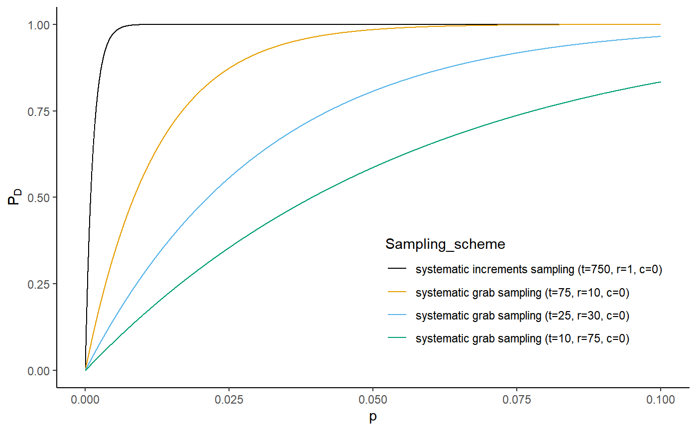
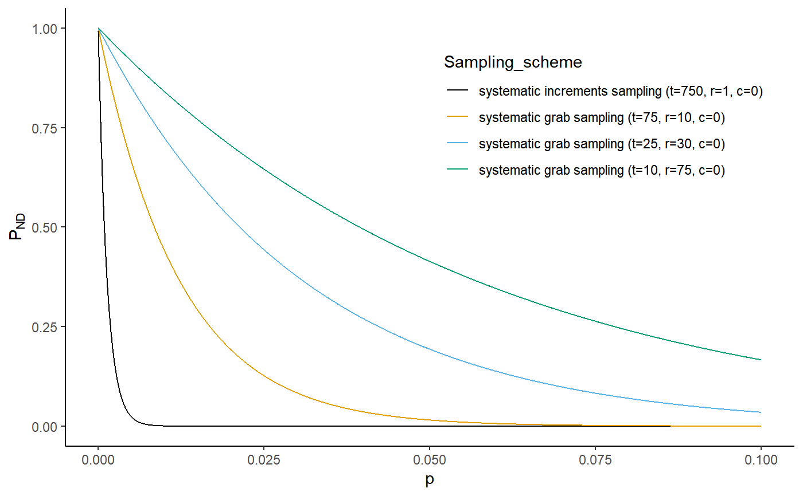

R/compare_plans.R
compare_plans.RdThis function allows comparison of different sampling schemes, which can be systematic and random sampling of primary increments or grab sampling of blocks of primary increments. A graphical display of the probability of detection \(P_D\) or probability of non detection \(P_{ND}\) versus fraction nonconforming \(p\) for up to four selected schemes will be produced.
compare_plans(d, N, plim, type, c1, r1, t1, method1, c2, r2, t2, method2, c3, r3, t3, method3, c4, r4, t4, method4)
| d | serial correlation of contamination between the primary increments |
|---|---|
| N | length of the production |
| plim | the upper limit for graphing the fraction nonconforming or proportion of contaminated increments |
| type | what type of graph we want to produce such as |
| c1, c2, c3, c4 | acceptance numbers |
| r1, r2, r3, r4 | number of primary increments in a grab sample or grab sample size |
| t1, t2, t3, t4 | number of grab samples |
| method1, method2, method3, method4 | what sampling method we have applied such as |
Probability of detection or non detection vs limiting fraction curves
c1 <- 0 c2 <- 0 c3 <- 0 c4 <- 0 r1 <- 1 r2 <- 10 r3 <- 30 r4 <- 75 t1 <- 750 t2 <- 75 t3 <- 25 t4 <- 10 d <- 0.99 N <- 1e9 method1 <- method2 <- method3 <- method4 <- 'systematic' plim <- 0.10 compare_plans(d, N, plim, type ='D', c1, r1, t1, method1, c2, r2, t2, method2)compare_plans(d, N, plim, type ='D', c1, r1, t1, method1, c2, r2, t2, method2, c3, r3, t3, method3)compare_plans(d, N, plim, type ='D', c1, r1, t1, method1, c2, r2, t2, method2, c3, r3, t3, method3, c4, r4, t4, method4)compare_plans(d, N, plim, type ='ND', c1, r1, t1, method1, c2, r2, t2, method2, c3, r3, t3, method3, c4, r4, t4, method4)